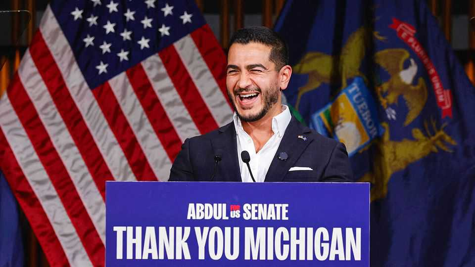

Hero or liability? The debate over Abdul El-Sayed
Michigan’s pugnacious populist wants to shake up the Democratic Party

Nov 5th 2026
“I tell my friends he’s like our generation’s JFK,” says Imran Aijazuddin, referring to his friend, Abdul El-Sayed. The mood at Dr El-Sayed’s election-night party is similarly exuberant. The pugnacious populist won the hard-fought Senate race in Michigan by seven points, exactly as he had predicted in May. He will be the first Muslim to serve in the upper chamber. And his victory gives the left wing of the Democratic Party a powerful new voice in Washington. Moderates, though, have a different take on the result.
Nearly everyone agrees that it was an exceptionally ugly and chaotic race. Donald Trump referred to Dr El-Sayed as a “jihadist”. Mike Rogers, his Republican opponent, falsely accused Dr El-Sayed of believing that America deserved the September 11th attacks. Then, in the final days of the race, Haley Stevens, his defeated rival in the Democratic primary, endorsed Mr Rogers. She had become increasingly angry about Dr El-Sayed’s confrontational style and fierce criticism of Israel.
Had Dr El-Sayed lost, moderate Democrats might have taken comfort in a setback for the insurgent left. The unwaveringly self-assured Dr El-Sayed has made little secret of his disdain for the party’s establishment. He has talked of backing primary challenges to Democrats with whom he disagrees, such as John Fetterman, a senator from Pennsylvania. “Ideally, you put one ogre on a pike and then everyone else gets the message,” he told donors.
Such combativeness appeals to progressives. Bernie Sanders, the democratic-socialist senator from Vermont, called Dr El-Sayed’s primary win “the most extraordinary victory…in modern American politics”, praising his defeat of the “Democratic establishment”. Alexandria Ocasio-Cortez, a progressive congresswoman, lauded his “agenda that speaks directly to working people”. Dr El-Sayed backs Medicare for all and universal free child care. In his victory speech, he declared that winning a Senate seat was never the goal. His ambition, rather, is to “transform our politics”.
Yet Dr El-Sayed’s victory was less impressive than his supporters suggest. His seven-point margin was modest compared with the scale of the Democrats’ national gains. His race was close enough that the hated Democratic establishment had to put plenty of money to work in Michigan to support him. Other Democrats won in deep-red territory, such as Kansas and South Carolina, while Dr El-Sayed merely retained a seat already held by his party.
Candidates in the mould of Dr El-Sayed underperformed elsewhere, too. Based on endorsements by leftist groups and opposition to Democratic Party leadership, we identified 32 such Congressional nominees before the election. Most ran in deep-blue districts. But among the eight who stood in places that Kamala Harris won by fewer than ten points in 2024, their average vote shares were 1.5 percentage points lower than you would expect based on past voting and demography.
That is unlikely to dim Dr El-Sayed’s zeal. The party’s comfortable Senate majority gives him plenty of room to snipe at its establishment—and to cement his status as a hero of the progressive left. ■
Stay on top of American politics with The US in brief, our daily newsletter with fast analysis of the most important political news, and Checks and Balance, a weekly note that examines the state of American democracy and the issues that matter to voters.